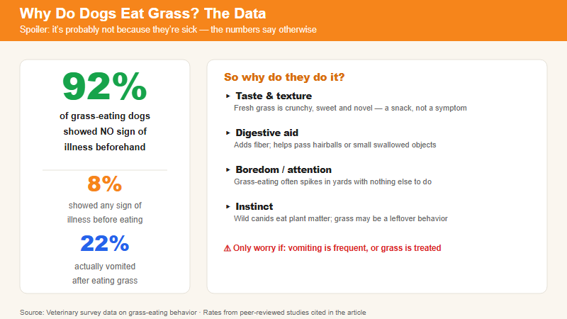

Everyone has a theory. The research says something else. | 2026-06-05 · MeltPet · 4 min read
Not sick. Just running wolf software on dog hardware.
Last updated: 2026-07-09
My Childhood Dog Ate Grass Every Morning. My Mom Said He Was Sick. She Was Wrong.
We had a Beagle mix named Barney when I was a kid. Every single morning, same routine: out the back door, sniff the perimeter of the yard, select a specific patch of grass near the fence, and eat it like it was a salad course. Sometimes he'd throw up a little foam afterward. Sometimes he wouldn't. My mom always said the same thing: "His stomach's upset. He's eating grass to make himself feel better."
Millions of dog owners believe this. The internet has cemented it. Type "why does my dog eat grass" into Google and you'll get a hundred articles saying "dogs eat grass to induce vomiting when they have an upset stomach."
There's one problem with that answer. When researchers actually studied it, they found almost the exact opposite.
What Happens When You Actually Study This
In 2008, a team at UC Davis did something straightforward. They surveyed over 1,500 dog owners about grass-eating behavior. Then they drilled down into the data to answer two questions: Are dogs sick before they eat grass? And how often do they actually throw up afterward?
The numbers flipped the conventional wisdom on its head. Only about 8% of dogs showed any sign of illness before eating grass. Not 50%. Not "most of them." Eight percent. And after eating grass, just 22% vomited. That means more than three quarters of grass-eating dogs kept it down with no apparent digestive consequence.
Dogs who were already sick were slightly more likely to vomit. That makes sense —if your stomach is already off, eating a bunch of indigestible fiber isn't going to settle it. But the idea that dogs deliberately self-medicate with grass? The evidence just isn't there. Most grass-eating dogs felt fine before, felt fine after, and went about their day like nothing happened.

The data on grass eating: 92% of dogs were perfectly fine beforehand.
So Why Do They Do It?
The answer is probably older than dogs themselves.
Wolves eat grass. Coyotes eat grass. Foxes eat grass. Wild canids routinely consume small amounts of plant material —not as a primary food source, but as a normal part of scavenging and foraging. When a wolf eats a rabbit, it consumes the stomach contents too, which includes partially digested vegetation. Grass is just an extension of a behavior that's been around for millions of years.
A 2007 study in the Journal of Veterinary Behavior found that grass-eating was more common in younger dogs and occurred more frequently before meals —when hunger was higher. The dogs weren't sick. They were just... eating. The behavior appears to be ancestral and largely harmless. Dogs do it because their wild relatives did it, and nobody told them to stop.
There's also a simpler explanation for some dogs. They're bored. A dog left alone in a yard with nothing to chew, no toys, no interaction, will find something to do. Grass is right there. Chewing it passes the time. If your dog only eats grass when she's been outside alone for an hour, it's probably not biology —it's entertainment.
When It's Not Fine
Grass itself is mostly harmless. Dogs can't digest it —they lack cellulase, the enzyme that breaks down plant cell walls —so it passes through intact. Worst case for most dogs: a little foamy vomit and a weird-looking poop.
What's on the grass is the real concern. Pesticides. Herbicides. Fertilizers. Rat poison placed near landscaping. Slug bait. These are the things that turn a harmless ancestral behavior into a vet emergency. If you treat your lawn with anything chemical, your dog shouldn't eat it. Parks and apartment complexes are wildcards —you don't know what they spray or when.
There's also a mechanical risk. Foxtails and other sharp grass awns can lodge in gums, tonsils, or throat tissue. If your dog is pawing at her mouth, drooling excessively, or swallowing repeatedly after a grass-eating session, check her mouth and throat. A foxtail that migrates into tissue becomes a surgical problem.
And if your dog eats grass frantically —desperate, urgent, can't be distracted —and then vomits repeatedly, that's different from the casual morning graze. That's a dog who actually is sick. The grass isn't causing it and probably isn't helping. Get the dog to a vet.
Let Them Eat Grass. Just Be Smart About It.
If your dog grazes occasionally on untreated grass and doesn't seem bothered afterward, there's nothing to fix. It's an old habit from an old lineage. Wolves do it. Coyotes do it. Your Labrador does it because somewhere back in her genetic code, foraging for plant material was part of the program.
If she's eating grass obsessively, or it's treated grass, or she vomits every time —those are the scenarios worth addressing. Otherwise, let her have her salad. She's not sick. She's just being a dog.
📚 Sources
Peer-reviewed research on canine pica and grass-eating behavior.